本文档用于说明面向国际留学生的信息管理系统V1.0的需求范围、系统结构、数据设计、接口设计、权限控制、运行部署和测试验证情况。系统面向国际留学生管理场景，覆盖学生登录、教师管理、学生档案、国籍、班级、住宿、签证、学习情况、统计分析、成绩对接与成绩适配等业务。文档中的运行界面截图均来自当前软件真实运行页面，用于证明系统界面、角色入口、数据展示和核心业务流程已经形成可运行的软件成果。
本软件采用 H5 前台、Node.js 后台和 MySQL 数据库。学生端采用移动端竖屏布局，并提供中文和英文两种语言；教师端和管理端采用横向管理页面布局，提供统计分析、学生管理、教师管理、成绩适配管理和风险查询等页面。系统重点能力是将不同国家、不同学校、不同成绩体系下的原始成绩统一适配为本校标准成绩、GPA、学分和审核状态，并保留规则版本与异常原因。
用户认证需求：系统应支持学生、教师、管理员统一登录，并根据角色展示不同菜单。学生只能查看本人档案、成绩和学习情况；教师可查看学生列表、成绩适配记录和风险信息；管理员可查看统计、学生、教师、成绩和风险等管理页面。
学生端双语需求：学生客户端应提供中文和英文两种语言。语言切换后，页面标题、按钮、菜单、表格字段和提示文字应同步切换；国籍等字段可结合数据库中的中文和英文字段显示。
学生档案需求：系统应维护学生学号、中文名、英文名、性别、生日、国籍、护照、邮箱、电话、班级、学院、专业、学籍状态等信息，并提供按角色查询能力。
教师管理需求：系统应维护教师工号、姓名、学院、联系方式、邮箱和教师类型，并支持管理员集中查看教师基础信息。
成绩适配需求：系统应支持百分制、字母制、GPA 和通过/不通过制成绩输入，根据国家、学校和规则版本换算为适配成绩、GPA、适配学分和通过状态。
风险查询需求：系统应聚合签证临期、成绩异常、低分风险、学习预警和住宿异常等风险，为教师和管理员提供集中查询入口。
统计分析需求：系统应统计学生人数、教师人数、签证预警数量和成绩异常数量，为管理人员掌握系统运行状态提供依据。
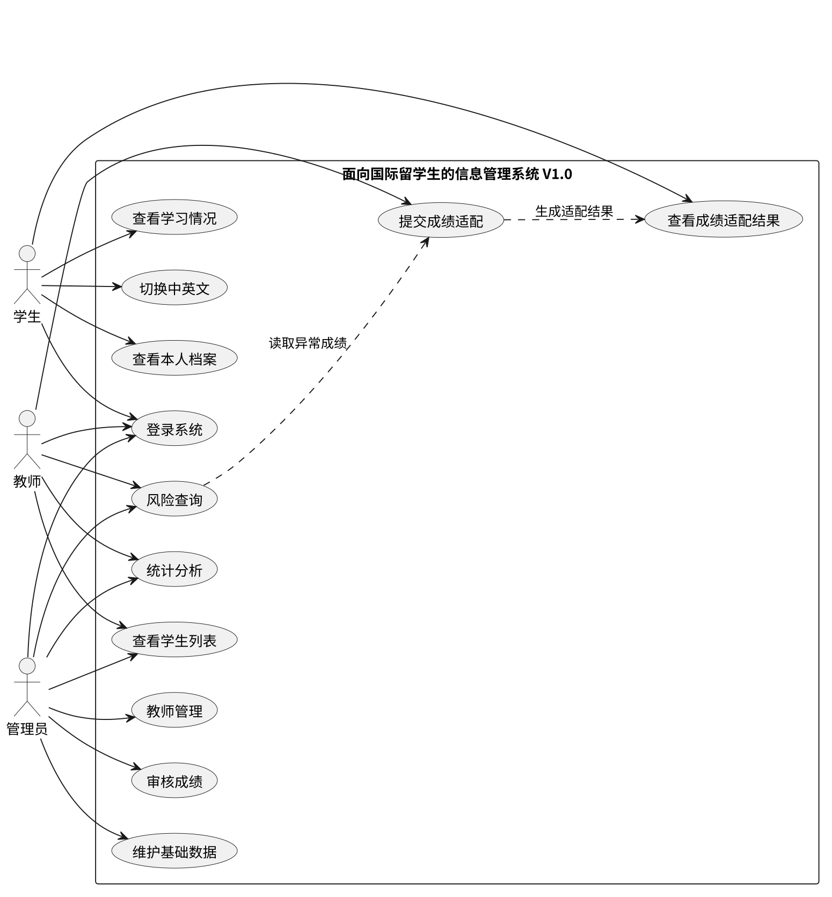
图 1 为系统用例图，用于说明三类角色与核心功能之间的对应关系。学生角色面向移动端 H5 页面，重点使用登录、语言切换、本人档案、成绩适配结果和学习情况功能；教师角色面向教学管理，主要使用学生列表、成绩适配、统计分析和风险查询功能；管理员角色面向综合管理，使用教师管理、成绩审核、基础数据维护和风险查询功能。该图放置在需求分析章节，是为了将功能需求、角色权限和后续页面截图建立对应关系，便于评审理解系统功能边界。
系统应具备清晰的角色权限控制、可追溯的数据记录、可扩展的成绩规则、基础安全防护和稳定的前后端交互能力。界面设计应适配移动端学生使用场景和桌面端管理场景，H5 页面优先采用竖屏布局，管理页面优先采用横向全屏布局。
系统用户包括学生、教师和管理员。学生使用 H5 客户端查看本人档案、学习情况和成绩适配结果；教师使用管理端查看学生、成绩和风险信息；管理员使用管理端完成学生档案、教师信息、成绩适配结果、统计分析和风险查询等管理工作。
| 模块 | 服务角色 | 页面或接口 | 数据对象 |
|---|---|---|---|
| 用户认证 | 学生、教师、管理员 | 登录页、/api/auth/login | users |
| 学生档案 | 学生、教师、管理员 | 个人档案、学生管理 | students、classes、nationalities |
| 教师管理 | 管理员 | 教师管理 | teachers、users |
| 成绩适配 | 学生、教师、管理员 | 成绩适配、成绩管理 | grade_records、grade_rules、external_schools |
| 风险查询 | 教师、管理员 | 风险查询 | visas、grade_records、study_records、dormitories |
| 统计分析 | 教师、管理员 | 统计分析 | students、teachers、visas、grade_records |
系统采用浏览器前端、Node.js 服务端和 MySQL 数据库的三层结构。前端由静态 H5 页面、CSS 和 JavaScript 组成，通过 Fetch 调用后端 REST API。后端采用 Express 框架，负责认证、权限校验、业务查询、成绩适配和风险聚合。数据库采用 MySQL，保存用户、学生、教师、班级、签证、住宿、学习记录、外部学校、成绩规则和成绩记录等结构化数据。
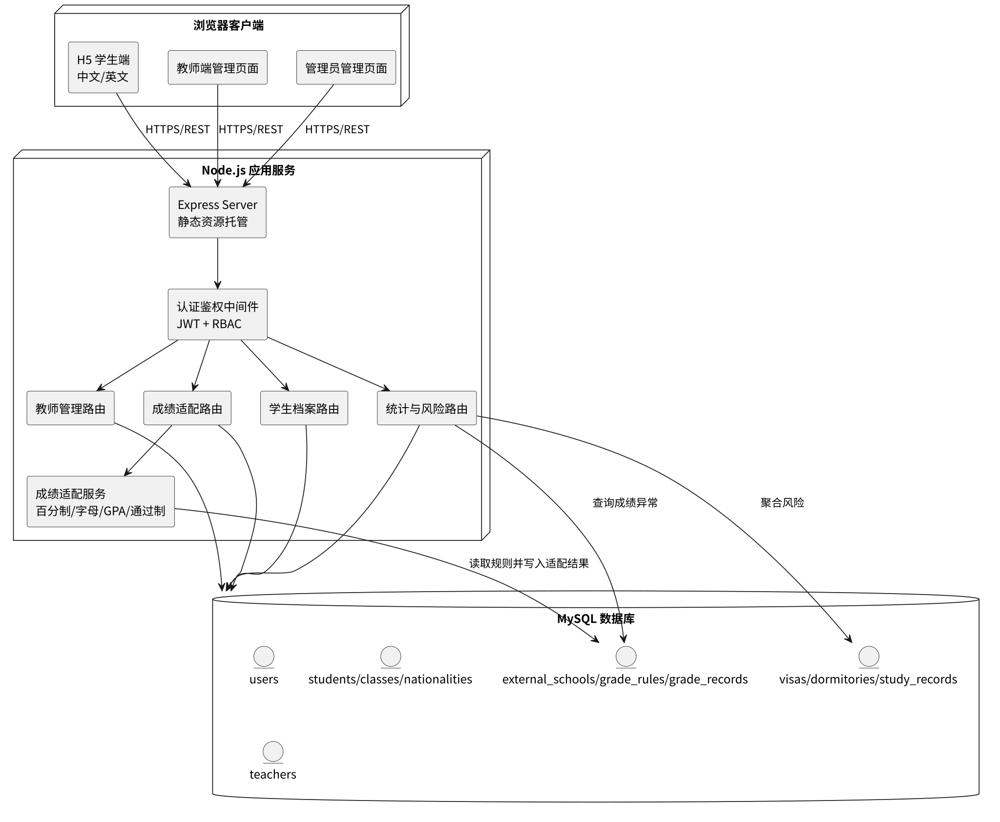
图 2 为系统架构图，用于说明软件运行时的三层结构和模块调用关系。浏览器客户端包含 H5 学生端、教师端管理页面和管理员管理页面，统一通过 REST 接口访问 Node.js 服务；Node.js 服务中包含认证鉴权、学生档案、教师管理、成绩适配、统计分析和风险查询等路由；MySQL 数据库保存用户、学生、教师、签证、住宿、学习、外部学校、成绩规则和成绩记录等业务对象。该图放置在总体设计章节，用于说明系统整体部署关系、模块边界和数据访问方向。
学生客户端按照移动端 H5 竖屏页面设计，软著插图中采用两张并排方式呈现中文和英文对照，便于说明国际化能力。教师端和管理端按照横向管理页面设计，软著插图中采用全宽展示，便于保留表格字段、统计指标和风险明细的可读性。
用户登录时提交账号和密码，后端校验用户状态和密码哈希，成功后签发令牌。前端保存登录会话，并在后续接口请求中携带授权信息。后端中间件根据角色限制接口访问范围，学生只能访问本人档案和本人成绩，教师与管理员可访问学生列表、成绩列表、风险查询和统计分析。
成绩适配服务接收外部学校、国家代码、课程、原始成绩类型、原始成绩和原始学分。系统根据学校和国家匹配成绩规则，支持百分制、字母制、GPA 和通过/不通过制。适配结果包括适配分数、四分制 GPA、适配学分、通过状态和规则版本。若成绩无法识别或超出范围，系统记录异常状态和异常原因。
风险查询模块从多个业务表聚合风险：签证到期时间进入 60 天窗口时形成签证临期风险；成绩适配失败形成成绩异常风险；适配分低于通过线形成低分风险；学习记录中预警等级较高或考勤偏低形成学习预警；住宿状态异常或退宿日期异常形成住宿风险。查询结果包含风险类型、学生学号、姓名、日期和详情。
| 表名 | 中文名称 | 主要用途 |
|---|---|---|
| users | 用户表 | 保存账号、密码哈希、角色、显示名称和账号状态 |
| students | 学生表 | 保存国际学生档案、国籍、护照、专业、班级和学籍状态 |
| teachers | 教师表 | 保存教师工号、姓名、学院、联系方式和教师类型 |
| classes | 班级表 | 保存班级编码、名称、学院、专业、班主任和入学年份 |
| nationalities | 国籍表 | 保存国家或地区编码、中文名、英文名、洲别、语言和时区 |
| dormitories | 住宿表 | 保存宿舍楼、房间、床位、入住学生和住宿状态 |
| visas | 签证表 | 保存签证类型、签证编号、签发日期、到期日期和居留许可 |
| study_records | 学习记录表 | 保存课程、考勤、作业、课堂表现、预警等级和教师 |
| external_schools | 外部学校表 | 保存来源学校、国家代码、联系人和对接方式 |
| grade_rules | 成绩规则表 | 保存学校或国家适配规则、GPA 比例、学分比例和通过线 |
| grade_records | 成绩记录表 | 保存原始成绩、适配成绩、GPA、审核状态和异常原因 |
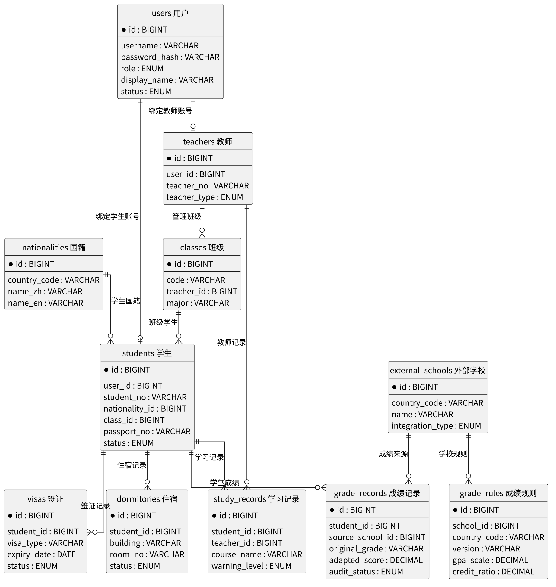
图 3 为数据库 ER 模型图，用于说明核心表结构之间的业务关联。用户表分别与学生表、教师表建立账号绑定关系，学生表与国籍表、班级表关联形成学生档案主数据，签证表、住宿表和学习记录表围绕学生形成风险查询数据来源，外部学校表、成绩规则表和成绩记录表共同支撑多国家、多学校成绩适配。该图放置在数据设计章节，用于证明数据库设计能够支撑档案管理、教师管理、风险查询和成绩适配等核心功能。
系统已经写入业务关联测试数据，各业务表记录均不少于 100 条。用户、学生、教师、班级、住宿、签证、学习记录、外部学校、成绩规则和成绩记录之间通过外键或业务编号建立关联，用于验证列表查询、统计分析、成绩适配和风险查询功能。
| 接口 | 方法 | 功能 |
|---|---|---|
| /api/auth/login | POST | 用户登录，返回令牌和用户角色 |
| /api/students/me | GET | 学生查看本人档案 |
| /api/students | GET | 教师或管理员查看学生列表 |
| /api/teachers | GET | 管理员查看教师列表 |
| /api/grades | GET | 教师或管理员查看成绩适配记录 |
| /api/grades/adapt | POST | 教师或管理员提交外部成绩并执行适配 |
| /api/grades/student/:studentId | GET | 查看指定学生成绩适配记录 |
| /api/grades/:id/audit | PATCH | 管理员审核成绩记录 |
| /api/management/dashboard | GET | 统计分析 |
| /api/management/risks | GET | 风险查询 |
系统服务运行于 Node.js 环境，通过 npm 安装依赖并启动 Express 服务。数据库使用 MySQL，初始化脚本创建数据库和业务表，种子脚本写入业务关联测试数据。前端静态资源由后端服务托管，用户通过浏览器访问系统入口。部署时应将数据库密码、令牌密钥和服务端口写入环境变量，并在生产环境中使用强密钥和独立数据库账号。
系统采用角色控制访问范围。学生角色只能访问本人档案和本人成绩，教师角色可访问教学相关学生、成绩和风险信息，管理员角色可访问管理统计、学生、教师、成绩和风险模块。密码以哈希形式保存，接口通过令牌鉴权。软著文档和截图中对演示账号密码进行脱敏处理，不展示真实数据库口令、令牌密钥或服务器路径。
系统已完成数据库初始化、业务数据填充、接口回归测试和浏览器截图验证。测试覆盖学生登录、教师登录、管理员登录、学生本人档案、学生成绩查询、教师学生列表、教师成绩管理、管理员教师管理、统计分析、成绩适配提交、成绩审核和风险查询。测试数据中各业务表记录均不少于 100 条，关键外键关系不存在断链。
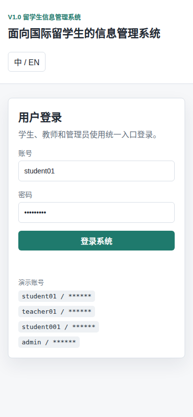
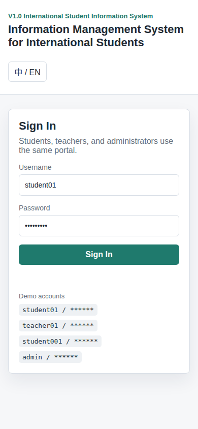
图 1 H5 登录页中英文对照。左图为中文登录页，右图为英文登录页，语言切换入口位于页面右上角。
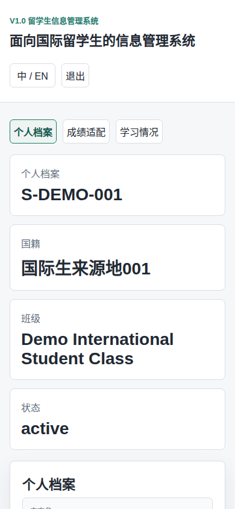
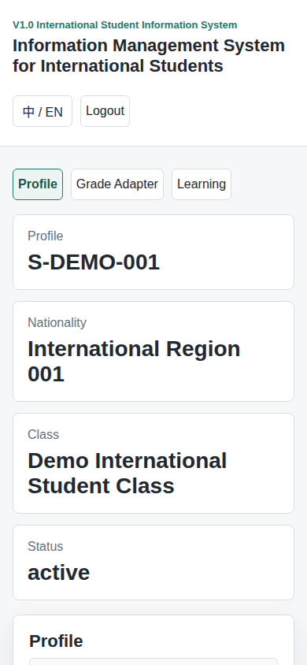
图 2 H5 学生个人档案中英文对照。左图为中文档案页，右图为英文档案页，展示同一学生账号在两种语言下的档案字段。
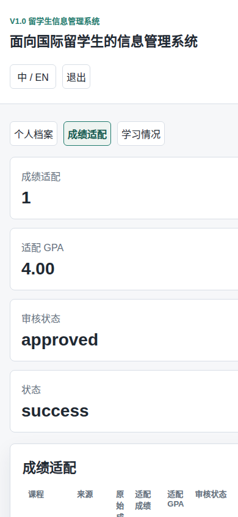
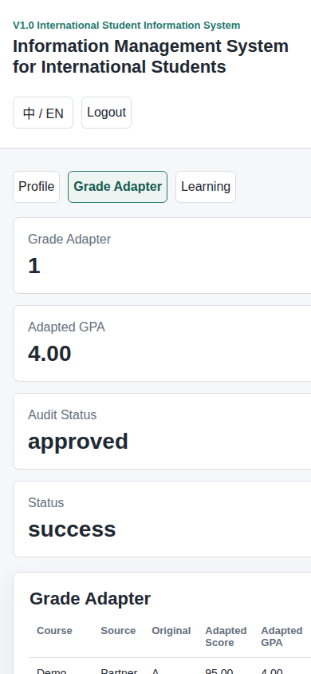
图 3 H5 学生成绩适配中英文对照。左图展示中文成绩适配结果，右图展示英文成绩适配结果，体现跨学校成绩数据的双语展示。
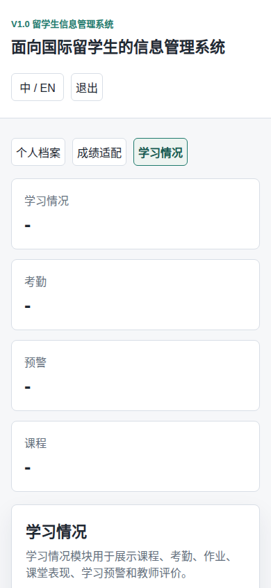
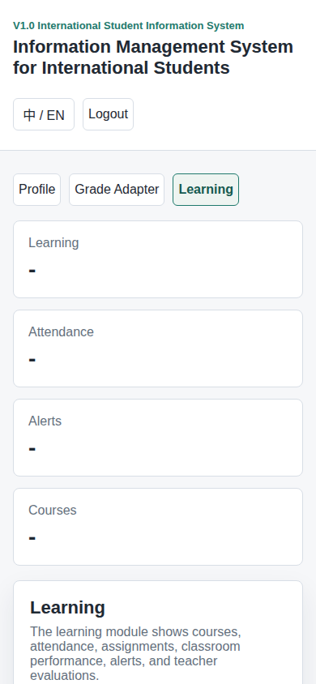
图 4 H5 学习情况中英文对照。左图为中文学习情况入口，右图为英文学习情况入口，说明学生端学习过程信息支持国际化。
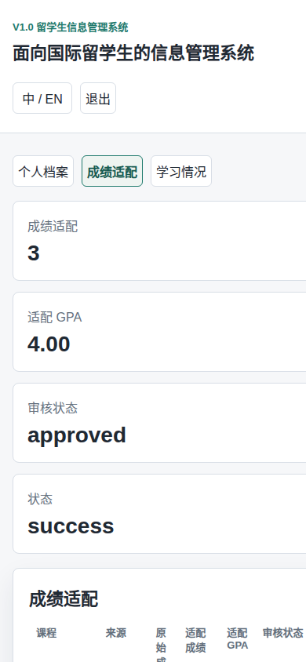
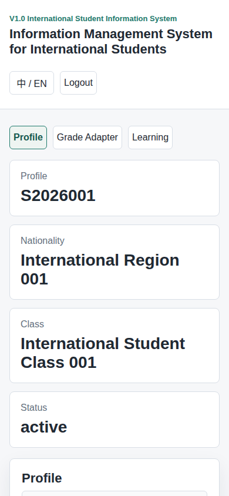
图 5 H5 批量业务数据学生页面。左图为批量学生中文成绩页，右图为批量学生英文档案页，说明系统中的测试数据具备业务关联。
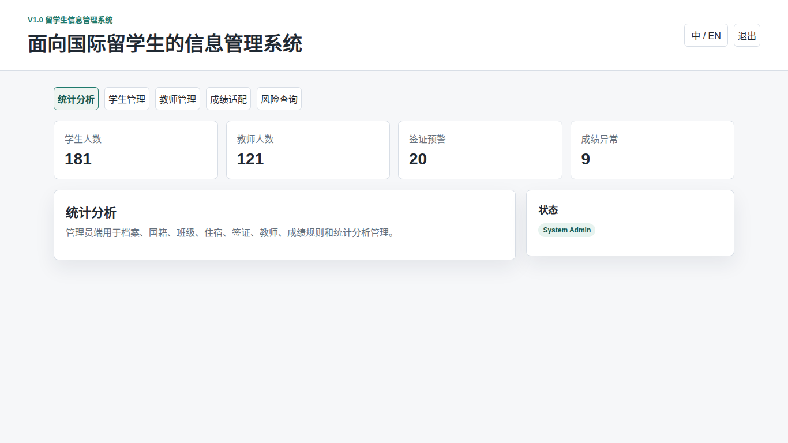
运行截图 6 管理端中文统计分析页。管理端中文统计分析页。该截图来源于面向国际留学生的信息管理系统V1.0的真实运行界面，页面类型为管理页面，语言状态为中文。截图中可以看到系统标题、角色菜单、主要业务数据区域、表格字段或状态指标，展示学生人数、教师人数、签证预警和成绩异常统计，说明管理员可查看系统整体运行状态。该图用于软著材料中证明软件已经具备对应功能的实际界面、数据展示和角色权限边界。截图内容与用户认证、学生档案、教师管理、成绩适配、统计分析或风险查询等模块存在直接关系，能够说明系统围绕国际留学生管理场景提供了可运行的页面入口和业务数据呈现能力。
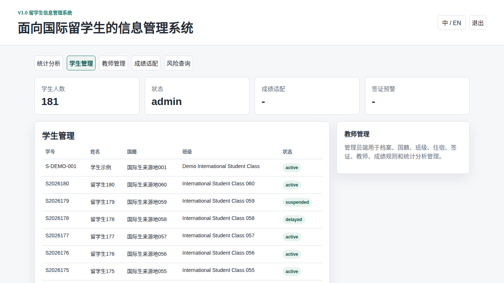
运行截图 7 管理端中文学生管理列表。管理端中文学生管理列表。该截图来源于面向国际留学生的信息管理系统V1.0的真实运行界面，页面类型为管理页面，语言状态为中文。截图中可以看到系统标题、角色菜单、主要业务数据区域、表格字段或状态指标，展示学生学号、姓名、国籍、班级和状态，说明学生档案管理具备列表查询能力。该图用于软著材料中证明软件已经具备对应功能的实际界面、数据展示和角色权限边界。截图内容与用户认证、学生档案、教师管理、成绩适配、统计分析或风险查询等模块存在直接关系，能够说明系统围绕国际留学生管理场景提供了可运行的页面入口和业务数据呈现能力。
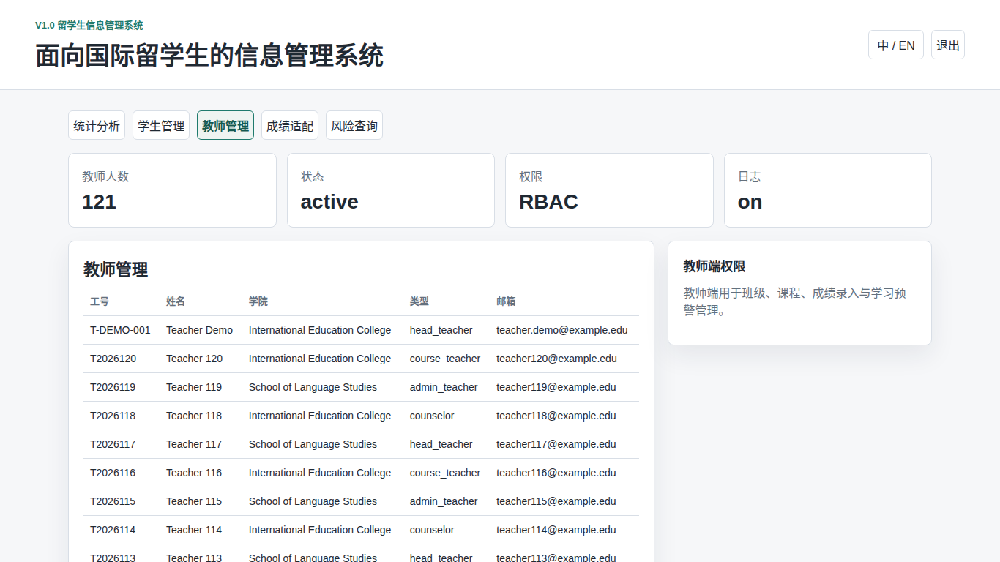
运行截图 8 管理端中文教师管理列表。管理端中文教师管理列表。该截图来源于面向国际留学生的信息管理系统V1.0的真实运行界面，页面类型为管理页面，语言状态为中文。截图中可以看到系统标题、角色菜单、主要业务数据区域、表格字段或状态指标，展示教师工号、姓名、学院、类型和邮箱，说明教师基础数据可以集中维护。该图用于软著材料中证明软件已经具备对应功能的实际界面、数据展示和角色权限边界。截图内容与用户认证、学生档案、教师管理、成绩适配、统计分析或风险查询等模块存在直接关系，能够说明系统围绕国际留学生管理场景提供了可运行的页面入口和业务数据呈现能力。
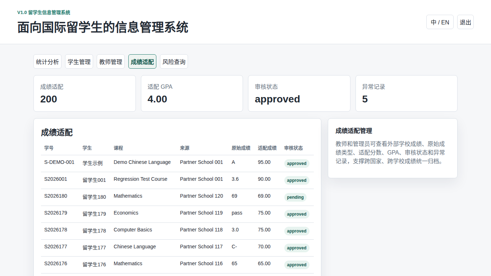
运行截图 9 管理端中文成绩适配管理页。管理端中文成绩适配管理页。该截图来源于面向国际留学生的信息管理系统V1.0的真实运行界面，页面类型为管理页面，语言状态为中文。截图中可以看到系统标题、角色菜单、主要业务数据区域、表格字段或状态指标，展示外部学校成绩记录、原始成绩、适配成绩和审核状态，说明成绩适配结果可以集中管理。该图用于软著材料中证明软件已经具备对应功能的实际界面、数据展示和角色权限边界。截图内容与用户认证、学生档案、教师管理、成绩适配、统计分析或风险查询等模块存在直接关系，能够说明系统围绕国际留学生管理场景提供了可运行的页面入口和业务数据呈现能力。
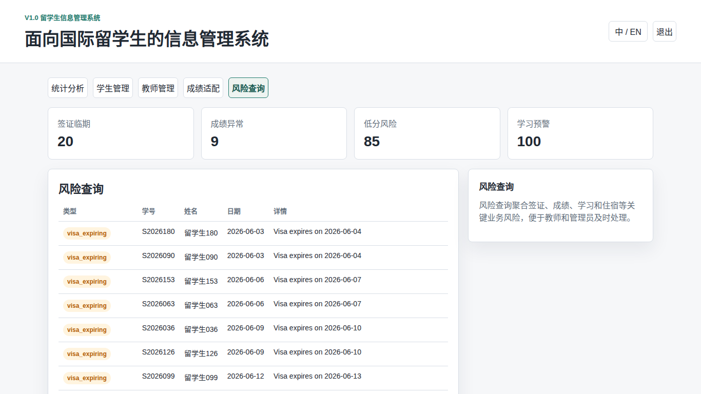
运行截图 10 管理端中文风险查询页。管理端中文风险查询页。该截图来源于面向国际留学生的信息管理系统V1.0的真实运行界面，页面类型为管理页面，语言状态为中文。截图中可以看到系统标题、角色菜单、主要业务数据区域、表格字段或状态指标，展示签证临期、成绩异常、低分风险和学习预警数量，说明系统支持综合风险查询。该图用于软著材料中证明软件已经具备对应功能的实际界面、数据展示和角色权限边界。截图内容与用户认证、学生档案、教师管理、成绩适配、统计分析或风险查询等模块存在直接关系，能够说明系统围绕国际留学生管理场景提供了可运行的页面入口和业务数据呈现能力。
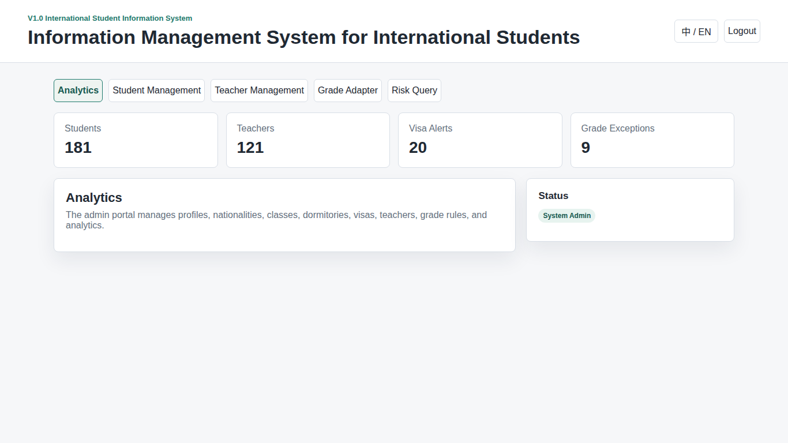
运行截图 11 Admin Analytics Page。Admin Analytics Page。该截图来源于面向国际留学生的信息管理系统V1.0的真实运行界面，页面类型为管理页面，语言状态为英文。截图中可以看到系统标题、角色菜单、主要业务数据区域、表格字段或状态指标，展示英文统计指标 Students、Teachers、Visa Alerts、Grade Exceptions，说明管理端支持英文展示。该图用于软著材料中证明软件已经具备对应功能的实际界面、数据展示和角色权限边界。截图内容与用户认证、学生档案、教师管理、成绩适配、统计分析或风险查询等模块存在直接关系，能够说明系统围绕国际留学生管理场景提供了可运行的页面入口和业务数据呈现能力。
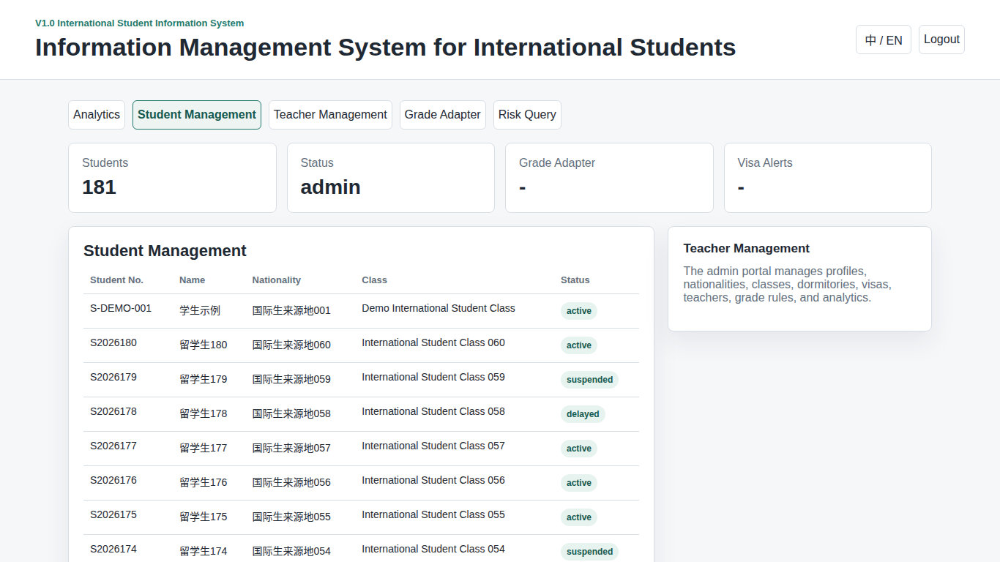
运行截图 12 Admin Student Management Page。Admin Student Management Page。该截图来源于面向国际留学生的信息管理系统V1.0的真实运行界面，页面类型为管理页面，语言状态为英文。截图中可以看到系统标题、角色菜单、主要业务数据区域、表格字段或状态指标，展示英文学生管理列表，说明学生档案数据在英文界面下可以查询。该图用于软著材料中证明软件已经具备对应功能的实际界面、数据展示和角色权限边界。截图内容与用户认证、学生档案、教师管理、成绩适配、统计分析或风险查询等模块存在直接关系，能够说明系统围绕国际留学生管理场景提供了可运行的页面入口和业务数据呈现能力。
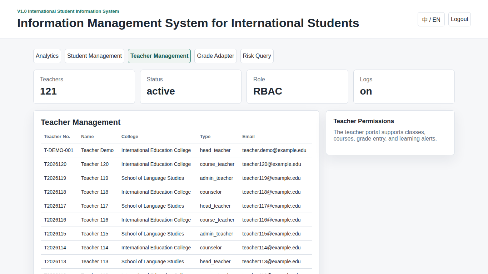
运行截图 13 Admin Teacher Management Page。Admin Teacher Management Page。该截图来源于面向国际留学生的信息管理系统V1.0的真实运行界面，页面类型为管理页面，语言状态为英文。截图中可以看到系统标题、角色菜单、主要业务数据区域、表格字段或状态指标，展示英文教师列表，说明管理员可查看教师基础信息和教师类型。该图用于软著材料中证明软件已经具备对应功能的实际界面、数据展示和角色权限边界。截图内容与用户认证、学生档案、教师管理、成绩适配、统计分析或风险查询等模块存在直接关系，能够说明系统围绕国际留学生管理场景提供了可运行的页面入口和业务数据呈现能力。
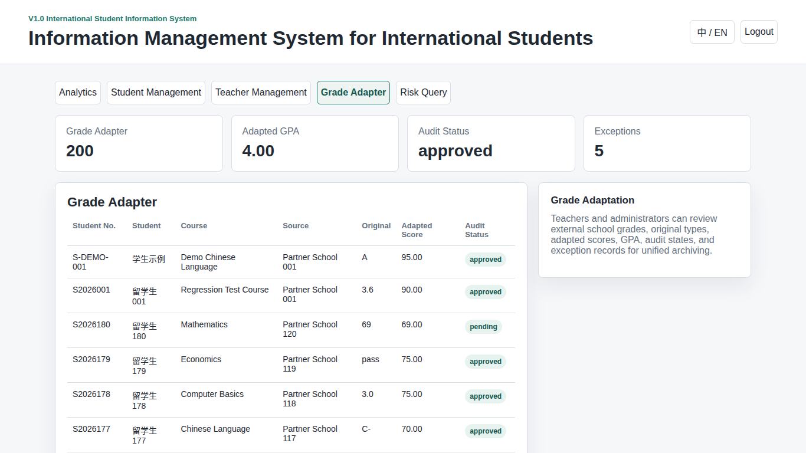
运行截图 14 Admin Grade Adapter Management Page。Admin Grade Adapter Management Page。该截图来源于面向国际留学生的信息管理系统V1.0的真实运行界面，页面类型为管理页面，语言状态为英文。截图中可以看到系统标题、角色菜单、主要业务数据区域、表格字段或状态指标，展示英文成绩适配管理表格，说明跨学校成绩记录可在英文管理端集中查询。该图用于软著材料中证明软件已经具备对应功能的实际界面、数据展示和角色权限边界。截图内容与用户认证、学生档案、教师管理、成绩适配、统计分析或风险查询等模块存在直接关系，能够说明系统围绕国际留学生管理场景提供了可运行的页面入口和业务数据呈现能力。
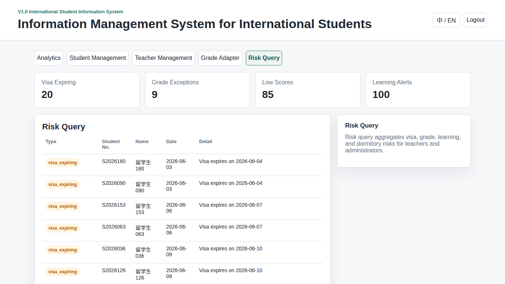
运行截图 15 Admin Risk Query Page。Admin Risk Query Page。该截图来源于面向国际留学生的信息管理系统V1.0的真实运行界面，页面类型为管理页面，语言状态为英文。截图中可以看到系统标题、角色菜单、主要业务数据区域、表格字段或状态指标，展示英文风险查询指标和明细表，说明风险模块支持国际化展示。该图用于软著材料中证明软件已经具备对应功能的实际界面、数据展示和角色权限边界。截图内容与用户认证、学生档案、教师管理、成绩适配、统计分析或风险查询等模块存在直接关系，能够说明系统围绕国际留学生管理场景提供了可运行的页面入口和业务数据呈现能力。
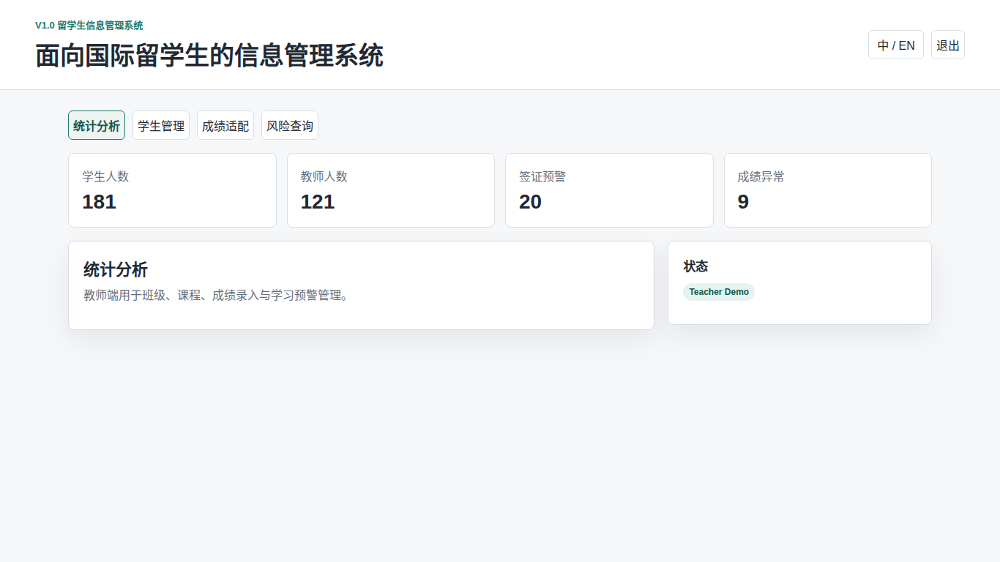
运行截图 16 教师端中文统计分析页。教师端中文统计分析页。该截图来源于面向国际留学生的信息管理系统V1.0的真实运行界面，页面类型为管理页面，语言状态为中文。截图中可以看到系统标题、角色菜单、主要业务数据区域、表格字段或状态指标，展示教师角色可访问的统计概览，说明教师端受角色权限控制。该图用于软著材料中证明软件已经具备对应功能的实际界面、数据展示和角色权限边界。截图内容与用户认证、学生档案、教师管理、成绩适配、统计分析或风险查询等模块存在直接关系，能够说明系统围绕国际留学生管理场景提供了可运行的页面入口和业务数据呈现能力。
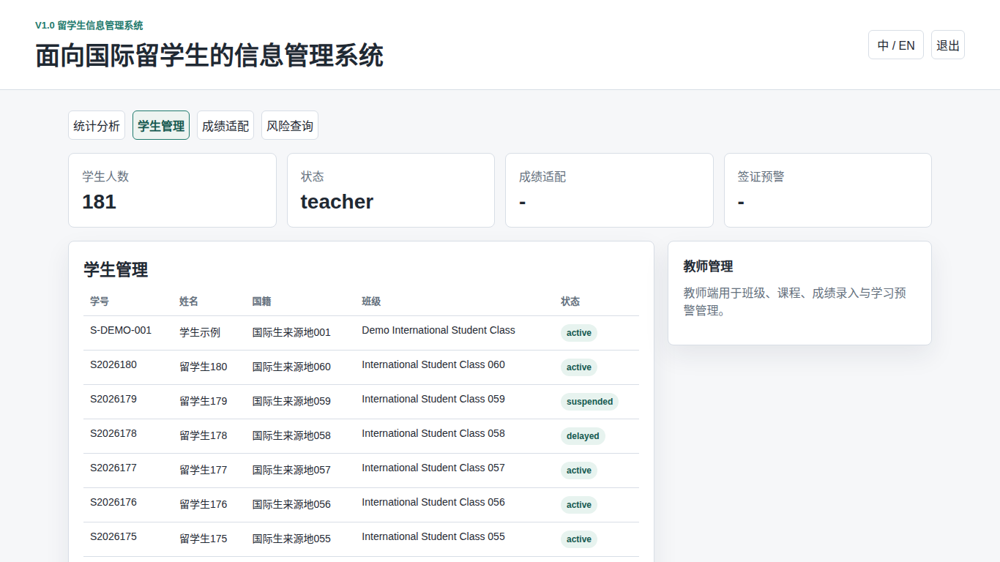
运行截图 17 教师端中文学生管理页。教师端中文学生管理页。该截图来源于面向国际留学生的信息管理系统V1.0的真实运行界面，页面类型为管理页面，语言状态为中文。截图中可以看到系统标题、角色菜单、主要业务数据区域、表格字段或状态指标，展示教师可查看的学生列表，支撑班级学生、课程学生和学习状态管理。该图用于软著材料中证明软件已经具备对应功能的实际界面、数据展示和角色权限边界。截图内容与用户认证、学生档案、教师管理、成绩适配、统计分析或风险查询等模块存在直接关系，能够说明系统围绕国际留学生管理场景提供了可运行的页面入口和业务数据呈现能力。
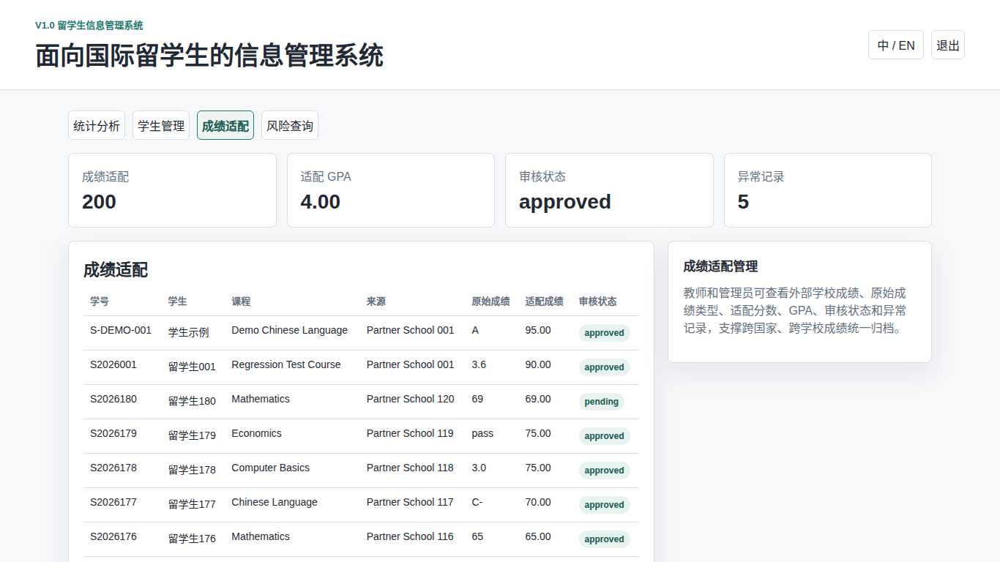
运行截图 18 教师端中文成绩管理页。教师端中文成绩管理页。该截图来源于面向国际留学生的信息管理系统V1.0的真实运行界面，页面类型为管理页面，语言状态为中文。截图中可以看到系统标题、角色菜单、主要业务数据区域、表格字段或状态指标，展示教师可访问的成绩适配记录，说明教师可参与成绩录入和核验流程。该图用于软著材料中证明软件已经具备对应功能的实际界面、数据展示和角色权限边界。截图内容与用户认证、学生档案、教师管理、成绩适配、统计分析或风险查询等模块存在直接关系，能够说明系统围绕国际留学生管理场景提供了可运行的页面入口和业务数据呈现能力。
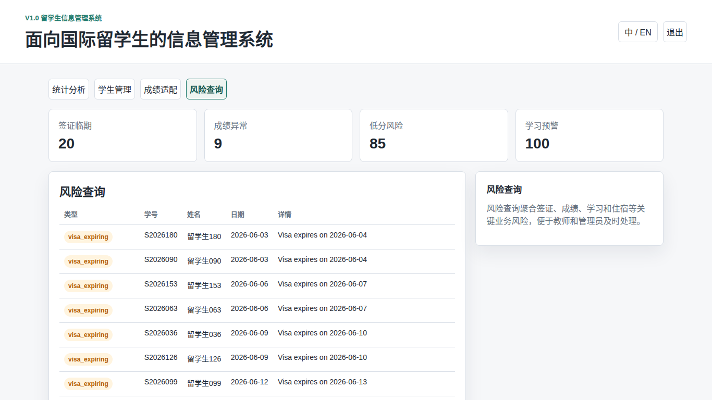
运行截图 19 教师端中文风险查询页。教师端中文风险查询页。该截图来源于面向国际留学生的信息管理系统V1.0的真实运行界面，页面类型为管理页面，语言状态为中文。截图中可以看到系统标题、角色菜单、主要业务数据区域、表格字段或状态指标，展示教师端风险查询结果，便于教师关注成绩、学习和签证相关预警。该图用于软著材料中证明软件已经具备对应功能的实际界面、数据展示和角色权限边界。截图内容与用户认证、学生档案、教师管理、成绩适配、统计分析或风险查询等模块存在直接关系，能够说明系统围绕国际留学生管理场景提供了可运行的页面入口和业务数据呈现能力。
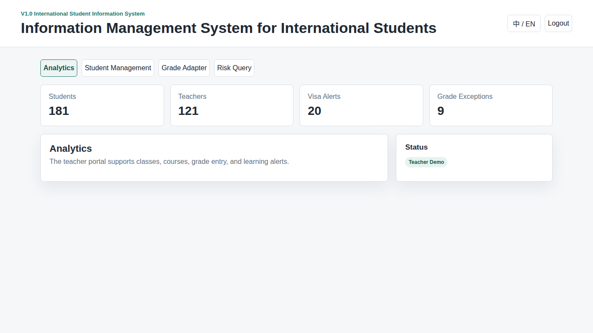
运行截图 20 Teacher Analytics Page。Teacher Analytics Page。该截图来源于面向国际留学生的信息管理系统V1.0的真实运行界面，页面类型为管理页面，语言状态为英文。截图中可以看到系统标题、角色菜单、主要业务数据区域、表格字段或状态指标，展示英文教师统计概览，是教师端英文工作台入口。该图用于软著材料中证明软件已经具备对应功能的实际界面、数据展示和角色权限边界。截图内容与用户认证、学生档案、教师管理、成绩适配、统计分析或风险查询等模块存在直接关系，能够说明系统围绕国际留学生管理场景提供了可运行的页面入口和业务数据呈现能力。
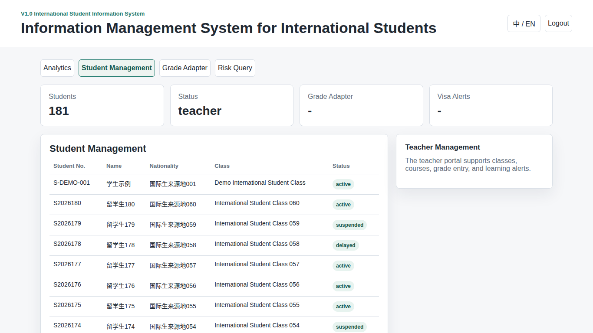
运行截图 21 Teacher Student Management Page。Teacher Student Management Page。该截图来源于面向国际留学生的信息管理系统V1.0的真实运行界面，页面类型为管理页面，语言状态为英文。截图中可以看到系统标题、角色菜单、主要业务数据区域、表格字段或状态指标，展示英文学生列表，说明教师端可在英文界面下进行学生查询。该图用于软著材料中证明软件已经具备对应功能的实际界面、数据展示和角色权限边界。截图内容与用户认证、学生档案、教师管理、成绩适配、统计分析或风险查询等模块存在直接关系，能够说明系统围绕国际留学生管理场景提供了可运行的页面入口和业务数据呈现能力。
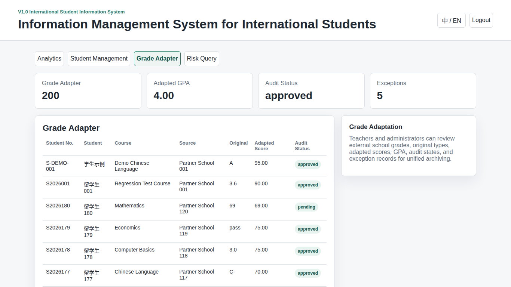
运行截图 22 Teacher Grade Adapter Page。Teacher Grade Adapter Page。该截图来源于面向国际留学生的信息管理系统V1.0的真实运行界面，页面类型为管理页面，语言状态为英文。截图中可以看到系统标题、角色菜单、主要业务数据区域、表格字段或状态指标，展示英文成绩适配管理列表，说明教师端可查看成绩适配结果和审核状态。该图用于软著材料中证明软件已经具备对应功能的实际界面、数据展示和角色权限边界。截图内容与用户认证、学生档案、教师管理、成绩适配、统计分析或风险查询等模块存在直接关系，能够说明系统围绕国际留学生管理场景提供了可运行的页面入口和业务数据呈现能力。
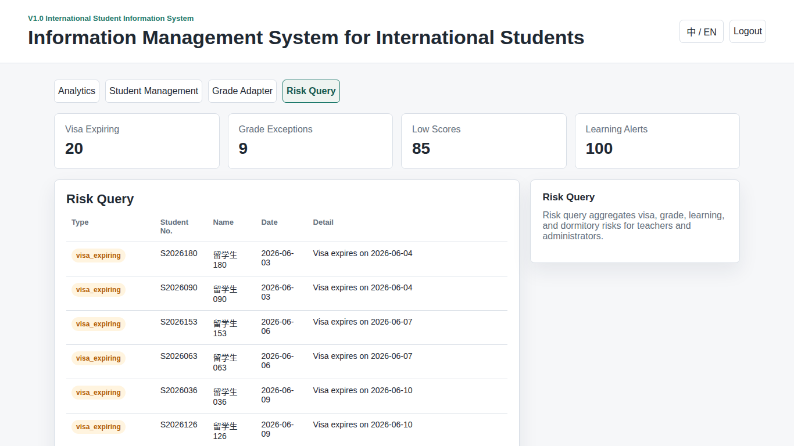
运行截图 23 Teacher Risk Query Page。Teacher Risk Query Page。该截图来源于面向国际留学生的信息管理系统V1.0的真实运行界面，页面类型为管理页面，语言状态为英文。截图中可以看到系统标题、角色菜单、主要业务数据区域、表格字段或状态指标，展示英文风险查询，支撑教师识别学生学习和成绩风险。该图用于软著材料中证明软件已经具备对应功能的实际界面、数据展示和角色权限边界。截图内容与用户认证、学生档案、教师管理、成绩适配、统计分析或风险查询等模块存在直接关系，能够说明系统围绕国际留学生管理场景提供了可运行的页面入口和业务数据呈现能力。
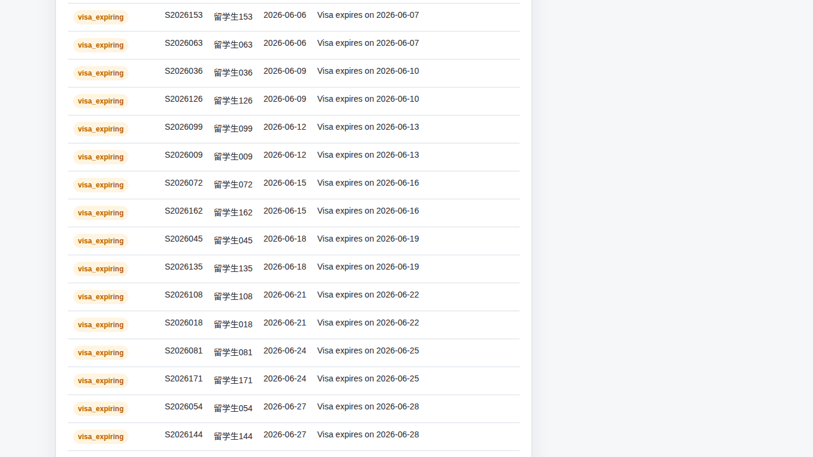
运行截图 24 管理端中文风险查询明细滚动页。管理端中文风险查询明细滚动页。该截图来源于面向国际留学生的信息管理系统V1.0的真实运行界面，页面类型为管理页面，语言状态为中文。截图中可以看到系统标题、角色菜单、主要业务数据区域、表格字段或状态指标，滚动展示更多风险明细，说明风险列表支持集中展示多类型预警记录。该图用于软著材料中证明软件已经具备对应功能的实际界面、数据展示和角色权限边界。截图内容与用户认证、学生档案、教师管理、成绩适配、统计分析或风险查询等模块存在直接关系，能够说明系统围绕国际留学生管理场景提供了可运行的页面入口和业务数据呈现能力。
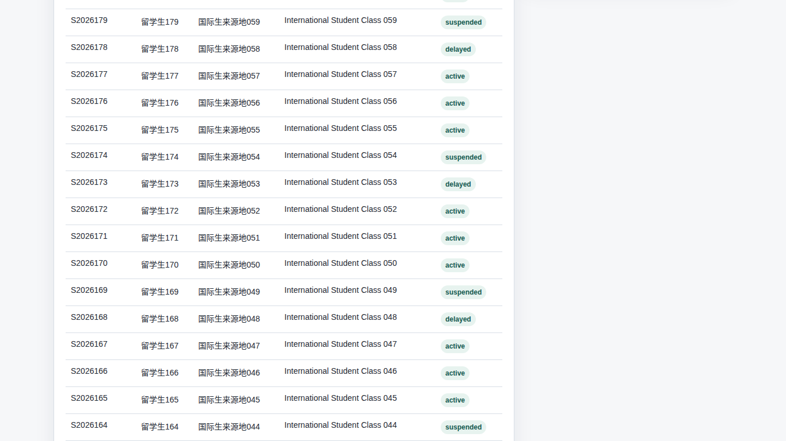
运行截图 25 Admin Student Management Detail Scroll Page。Admin Student Management Detail Scroll Page。该截图来源于面向国际留学生的信息管理系统V1.0的真实运行界面，页面类型为管理页面，语言状态为英文。截图中可以看到系统标题、角色菜单、主要业务数据区域、表格字段或状态指标，滚动展示更多学生记录，说明批量学生档案数据在管理端可以连续浏览。该图用于软著材料中证明软件已经具备对应功能的实际界面、数据展示和角色权限边界。截图内容与用户认证、学生档案、教师管理、成绩适配、统计分析或风险查询等模块存在直接关系，能够说明系统围绕国际留学生管理场景提供了可运行的页面入口和业务数据呈现能力。
本次软著材料共采集 30 张真实运行截图，其中 10 张为 H5 竖屏截图，20 张为教师端和管理端横屏截图。H5 截图按照中文和英文两张并排方式插入文档，重点体现学生客户端的移动端适配和国际化能力；管理端截图按照全宽方式插入文档，重点保证统计指标、表格字段、风险明细和成绩适配记录在 A4 页面中的可读性。每张截图均在 docs/assets/screenshots 目录下保留同名 PNG 文件和 TXT 说明文件，TXT 说明记录页面名称、访问状态、关键区域、模块关系和收录原因。截图采集过程中，系统服务处于真实运行状态，数据来自 MySQL 中的业务关联测试数据，未使用静态设计图替代真实页面。
| 编号 | 截图文件 | 页面类型 | 排版方式 |
|---|---|---|---|
| 01 | 01_h5_login_zh.png | H5 / 中文 / H5 学生端中文登录页 | H5 竖屏，两图并排 |
| 02 | 02_h5_login_en.png | H5 / 英文 / H5 Student Sign In Page | H5 竖屏，两图并排 |
| 03 | 03_h5_student_profile_zh.png | H5 / 中文 / H5 学生端中文个人档案页 | H5 竖屏，两图并排 |
| 04 | 04_h5_student_grades_zh.png | H5 / 中文 / H5 学生端中文成绩适配页 | H5 竖屏，两图并排 |
| 05 | 05_h5_student_learning_zh.png | H5 / 中文 / H5 学生端中文学习情况页 | H5 竖屏，两图并排 |
| 06 | 06_h5_student_profile_en.png | H5 / 英文 / H5 Student Profile Page | H5 竖屏，两图并排 |
| 07 | 07_h5_student_grades_en.png | H5 / 英文 / H5 Student Grade Adapter Page | H5 竖屏，两图并排 |
| 08 | 08_h5_student_learning_en.png | H5 / 英文 / H5 Student Learning Page | H5 竖屏，两图并排 |
| 09 | 09_h5_batch_student_grades_zh.png | H5 / 中文 / H5 批量学生中文成绩页 | H5 竖屏，两图并排 |
| 10 | 10_h5_batch_student_profile_en.png | H5 / 英文 / H5 Batch Student Profile Page | H5 竖屏，两图并排 |
| 11 | 11_admin_dashboard_zh.png | 管理 / 中文 / 管理端中文统计分析页 | 管理端横屏，全宽展示 |
| 12 | 12_admin_students_zh.png | 管理 / 中文 / 管理端中文学生管理列表 | 管理端横屏，全宽展示 |
| 13 | 13_admin_teachers_zh.png | 管理 / 中文 / 管理端中文教师管理列表 | 管理端横屏，全宽展示 |
| 14 | 14_admin_grades_zh.png | 管理 / 中文 / 管理端中文成绩适配管理页 | 管理端横屏，全宽展示 |
| 15 | 15_admin_risks_zh.png | 管理 / 中文 / 管理端中文风险查询页 | 管理端横屏，全宽展示 |
| 16 | 16_admin_dashboard_en.png | 管理 / 英文 / Admin Analytics Page | 管理端横屏，全宽展示 |
| 17 | 17_admin_students_en.png | 管理 / 英文 / Admin Student Management Page | 管理端横屏，全宽展示 |
| 18 | 18_admin_teachers_en.png | 管理 / 英文 / Admin Teacher Management Page | 管理端横屏，全宽展示 |
| 19 | 19_admin_grades_en.png | 管理 / 英文 / Admin Grade Adapter Management Page | 管理端横屏，全宽展示 |
| 20 | 20_admin_risks_en.png | 管理 / 英文 / Admin Risk Query Page | 管理端横屏，全宽展示 |
| 21 | 21_teacher_dashboard_zh.png | 管理 / 中文 / 教师端中文统计分析页 | 管理端横屏，全宽展示 |
| 22 | 22_teacher_students_zh.png | 管理 / 中文 / 教师端中文学生管理页 | 管理端横屏，全宽展示 |
| 23 | 23_teacher_grades_zh.png | 管理 / 中文 / 教师端中文成绩管理页 | 管理端横屏，全宽展示 |
| 24 | 24_teacher_risks_zh.png | 管理 / 中文 / 教师端中文风险查询页 | 管理端横屏，全宽展示 |
| 25 | 25_teacher_dashboard_en.png | 管理 / 英文 / Teacher Analytics Page | 管理端横屏，全宽展示 |
| 26 | 26_teacher_students_en.png | 管理 / 英文 / Teacher Student Management Page | 管理端横屏，全宽展示 |
| 27 | 27_teacher_grades_en.png | 管理 / 英文 / Teacher Grade Adapter Page | 管理端横屏，全宽展示 |
| 28 | 28_teacher_risks_en.png | 管理 / 英文 / Teacher Risk Query Page | 管理端横屏，全宽展示 |
| 29 | 29_admin_risks_scroll_zh.png | 管理 / 中文 / 管理端中文风险查询明细滚动页 | 管理端横屏，全宽展示 |
| 30 | 30_admin_students_scroll_en.png | 管理 / 英文 / Admin Student Management Detail Scroll Page | 管理端横屏，全宽展示 |
面向国际留学生的信息管理系统 V1.0 已形成可运行的软件成果。系统围绕国际学生管理业务，提供学生端双语访问、教师端教学管理、管理端统计分析、成绩适配和风险查询能力。系统通过数据表、接口、权限和运行界面共同支撑学生档案、教师、班级、国籍、住宿、签证、学习记录、成绩规则和成绩记录等业务数据管理，能够满足 V1.0 阶段的软件著作权材料编写和界面证明要求。